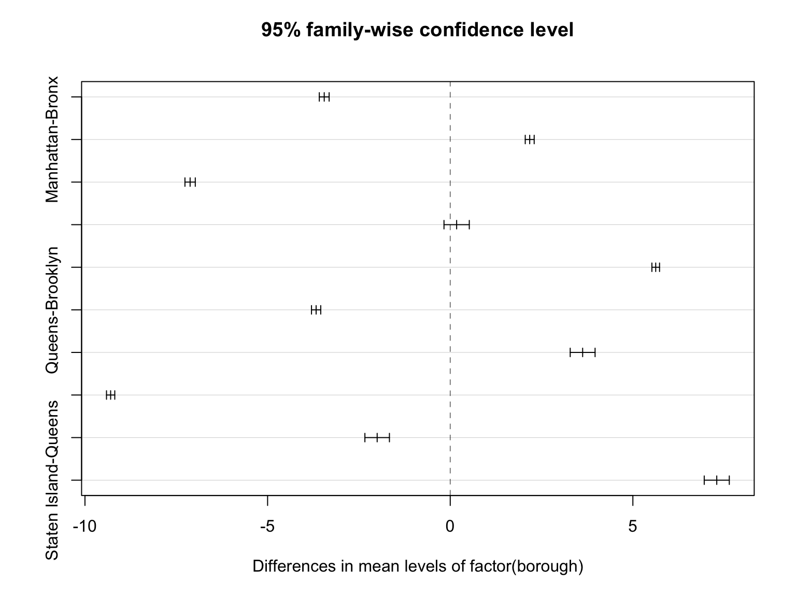

cafe = read_csv(here::here("data/Sidewalk_Caf__Licenses_and_Applications_clean.csv"))## Parsed with column specification:
## cols(
## .default = col_character(),
## zip = col_double(),
## swc_sq_ft = col_double(),
## swc_tables = col_double(),
## swc_chairs = col_double(),
## lat = col_double(),
## long = col_double(),
## community_district = col_double(),
## city_council_district = col_double(),
## app_sq_ft = col_double(),
## app_tables = col_double(),
## app_chairs = col_double(),
## app_status_date = col_datetime(format = ""),
## expiration_date = col_datetime(format = ""),
## app_too_date = col_datetime(format = ""),
## submit_date = col_datetime(format = ""),
## intake_dd = col_datetime(format = ""),
## send_package_dd = col_datetime(format = ""),
## cp_dd = col_datetime(format = ""),
## cb_dd = col_datetime(format = ""),
## hearing_dd = col_datetime(format = "")
## # ... with 4 more columns
## )## See spec(...) for full column specifications.parking = read_csv(
here::here("data/parking_vio2021_cleanv1.csv")) %>%
filter(hour != 12.3) ## Parsed with column specification:
## cols(
## id = col_double(),
## summons_number = col_double(),
## registration_state = col_character(),
## issue_date = col_datetime(format = ""),
## violation_code = col_double(),
## vehicle_make = col_character(),
## hour = col_double(),
## min = col_character(),
## violation_county = col_character(),
## house_number = col_character(),
## street_name = col_character(),
## intersecting_street = col_character(),
## vehicle_color = col_character(),
## vehicle_year = col_double(),
## address = col_character(),
## long = col_double(),
## lat = col_double(),
## borough = col_character(),
## fine_amount = col_double()
## )There are significant difference in fine amount between different boroughs.
boro_amount = parking %>%
drop_na(fine_amount, borough)%>%
select(borough, fine_amount)%>%
group_by(borough)
aov_boro_amount = aov(fine_amount ~factor(borough), data = boro_amount)
summary(aov_boro_amount)## Df Sum Sq Mean Sq F value Pr(>F)
## factor(borough) 4 4.85e+07 12136448 14365 <2e-16 ***
## Residuals 3837091 3.24e+09 845
## ---
## Signif. codes: 0 '***' 0.001 '**' 0.01 '*' 0.05 '.' 0.1 ' ' 1Tukey_comp<-TukeyHSD(aov_boro_amount)
plot(Tukey_comp)
day_order = c("Monday", "Tuesday", "Wednesday", "Thursday", "Friday", "Saturday", "Sunday")
chisq_boro_day =
parking %>%
mutate(day_week = weekdays(issue_date),
day_week = factor(day_week, levels = day_order)) %>%
arrange(day_week) %>%
count(borough, day_week) %>%
drop_na(day_week, borough) %>%
pivot_wider(names_from = day_week,
values_from = n) %>%
subset(select = c(-borough)) %>%
data.matrix()
rownames(chisq_boro_day) <- c("Bronx", "Brooklyn", "Manhattan", "Queens", "Staten Island")
chisq_boro_day## Monday Tuesday Wednesday Thursday Friday Saturday Sunday
## Bronx 88256 98908 102136 116247 111967 33418 17326
## Brooklyn 138406 159497 160257 186970 177160 46071 23779
## Manhattan 257886 289376 295706 321796 309619 92823 47548
## Queens 113284 125152 128542 139869 134533 45703 17645
## Staten Island 9904 10689 10883 11339 10960 2791 1193chisq.test(chisq_boro_day)##
## Pearson's Chi-squared test
##
## data: chisq_boro_day
## X-squared = 2867, df = 24, p-value <2e-16x_crit = qchisq(0.95,24)
x_crit # x critical value## [1] 36.4According to above chi-square test result, We reject the null hypothesis and conclude that the proportions of violation counts for week days are different among boroughs at 0.05 significant level.
chisq_boro_hour =
parking %>%
filter(hour != 12.3) %>%
filter(hour < 24) %>%
count(borough, hour) %>%
drop_na(borough) %>%
pivot_wider(names_from = hour,
values_from = n) %>%
subset(select = c(-borough)) %>%
data.matrix()
rownames(chisq_boro_hour) <- c("Bronx", "Brooklyn", "Manhattan", "Queens", "Staten Island")
chisq_boro_hour## 0 1 2 3 4 5 6 7 8 9 10
## Bronx 2528 2973 2009 1443 542 4640 30156 38618 56899 48104 42660
## Brooklyn 4129 5729 4039 2513 2112 6995 28724 53235 81123 84892 60885
## Manhattan 2899 4106 3385 2266 1449 6993 53170 103077 146324 140983 126784
## Queens 1430 2691 2123 1491 953 3716 27163 38006 69602 64942 52201
## Staten Island 117 143 124 67 62 143 1715 4752 4729 4458 3968
## 11 12 13 14 15 16 17 18 19 20
## Bronx 49002 50355 44297 39128 31960 29367 23466 19387 14983 14752
## Brooklyn 88549 80315 75477 64867 56500 46725 39878 32915 23559 20931
## Manhattan 130482 125989 169434 137104 106046 89097 81336 59221 42366 36902
## Queens 61301 56733 59274 57178 41622 45211 37352 26645 18183 15194
## Staten Island 3718 3236 5591 5771 4860 4115 3391 2549 1514 1224
## 21 22 23
## Bronx 14455 3765 2769
## Brooklyn 20212 4605 3231
## Manhattan 34329 6123 4889
## Queens 15697 3649 2371
## Staten Island 1222 168 122chisq.test(chisq_boro_hour)##
## Pearson's Chi-squared test
##
## data: chisq_boro_hour
## X-squared = 36780, df = 92, p-value <2e-16x_crit = qchisq(0.95,92)
x_crit # x critical value## [1] 115According to above chi-square test result, We reject the null hypothesis and conclude that the proportions of violation counts for each hour are different among boroughs at 0.05 significant level.